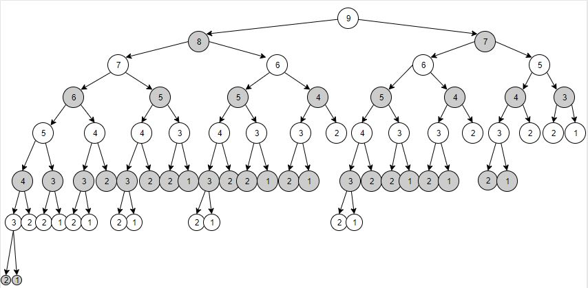

Game Trees and Memoization
A game tree is a type of recursive search function that traces all possible moves of a strategy game, and the result of each in an attempt to find an optimal move. Game trees are a type of Artificial Intelligence, and are primarily useful in scenarios that do not require real-time decision-making or have a relatively low number of possible choices per play.
Memoization is often used to speed up recursion by storing the results of function or method call based on the given inputs rather than simply computing the result over again. Then the function just returns the stored result rather than computing the result again. One can think of it as a cache for function or method results.
Objectives
- Trace recursive calls in a game tree.
- See what difference memoization makes to the number of branches that are explored.
- Convert a game written in C++ into Python.
The Pick-up Stones Game
Note: This assignment may NOT be completed with a partner--you must
complete it by yourself.
The rules of the Pick-up Stones Game are as Follows:
- There are a set number of stones in a pile: START_STONES
- Players alternate taking at least 1 stone and at most MAX_TAKE stones each turn.
- The player who take the last set of stones wins.
The obvious strategy is to try to leave your opponent with no stones.
Please clone the repo: a17-game-tree In this repo you will find:
stonesmemo.cpp- csc236-reflection-a17.docx
Open both files. The csc236-reflection-a17.docx file is a reflection document which will guide your understanding of the following game tree. You will also be converting the
stonesmemo.cpp
C++ program to Python.
To Submit
Note: This assignment may NOT be completed with a partner--you must complete it by yourself.- Your completed Python program file stonesmemo.py in addition to the files you started with.
- Include the completed yourusername-A17.docx reflection document.
- Submit the link to your repo into Moodle.